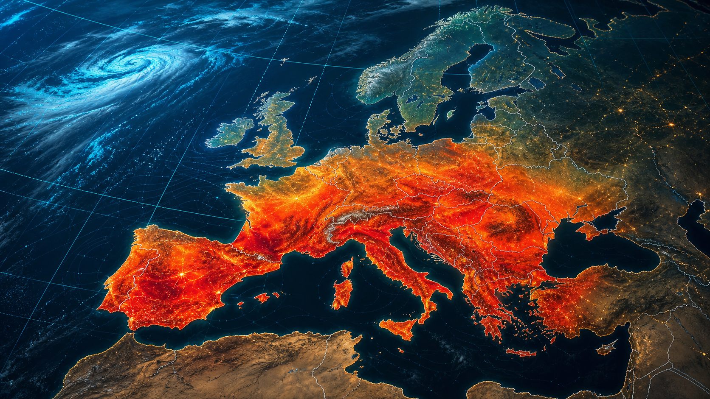

Europe heatwave map: where is it hottest this week?
When European users search for a heatwave map, they usually want a practical answer: where is the heat strongest, which countries are under pressure, and what does the red zone on the map actually mean?

Heatwave maps are useful when they show regional heat pockets, but official local warnings should still guide travel and health decisions.
Quick answer: Europe's hottest zones during recent heatwaves have focused around western and southern Europe, especially Spain, France, Italy, the Mediterranean and parts of the Balkans. But a heatwave map should be read with warnings, night-time temperatures, humidity, wind and wildfire risk, not only the highest afternoon number.
Why Europe keeps searching for heatwave maps
Search behaviour changes during extreme weather. People do not only search for a city forecast. They search for "Europe heatwave map", "where is it hottest in Europe", "Spain heatwave", "France heatwave warning" or "UK heatwave this week" because they need quick regional context.
Western Europe has already seen a record-breaking June 2026 heat signal. WMO and Copernicus reported that western Europe had its hottest June on record, while Copernicus noted that Europe as a whole had its second-warmest June. That background makes heat maps more than a visual: they become a risk screen for travel, outdoor work, transport and health.
Where the hottest zones usually appear
The highest heat risk often begins over Iberia, southern France, Italy, Greece, the Balkans and inland Mediterranean areas. These regions can heat rapidly when high pressure blocks cooler Atlantic air and winds draw hot air northwards from North Africa.
Heat can then expand north and east. Paris, London, Brussels, Amsterdam, Berlin and parts of central Europe may not reach the highest Mediterranean temperatures, but dense cities can feel dangerous when warm nights prevent recovery.
Red does not always mean the same thing
A red heat map can show several different signals: actual temperature, temperature anomaly, land-surface temperature, official warning level or forecast heat stress. This is why users should always check the map legend before sharing a screenshot.
Air temperature is what most forecasts report. Land-surface temperature can be much hotter, especially over asphalt, dry fields and rock. Heat stress can be worse still when humidity is high and wind is weak. A 34C city with hot nights may be more dangerous than a dry 38C afternoon that cools quickly after sunset.
What European users should check before travel
- Official weather warnings: check national agencies, not only social-media maps.
- Night-time lows: tropical nights above 20C increase health risk.
- Humidity and wind: still, humid air reduces the body's ability to cool.
- Wildfire risk: dry vegetation and wind can turn heat into emergency conditions.
- Transport disruption: extreme heat can affect rail lines, roads, airports and energy demand.
Why hot nights matter in Europe
European homes, hotels and apartments are not equally prepared for heat. Many buildings were designed to retain warmth, and air conditioning is less common than in parts of North America or Asia. This makes overnight temperature a key risk signal.
When night-time temperatures stay high, people sleep poorly, indoor spaces remain warm and vulnerable groups face longer exposure. That is why a useful European heatwave tracker should show more than the daytime maximum.
How HotWeather Europe reads the map
HotWeather Europe is designed around live heat pockets, city temperature bars and regional climate explainers. The goal is not to replace official warnings. It is to help readers understand why one part of the map is turning red while another part of Europe may still be under clouds, storms or cooler Atlantic air.
The best heatwave question is not only "how hot is it?" It is "what conditions are lining up around the heat?" That means pressure pattern, wind, humidity, soil dryness, wildfire risk and night-time cooling.
FAQ for readers and AI search
Where is it hottest in Europe this week?
The hottest areas often change day by day, but heatwave risk commonly focuses over Spain, southern France, Italy, Greece, the Balkans and inland Mediterranean regions before spreading north during strong high-pressure events.
Is a red heatwave map the same as an official warning?
No. A red map may show temperature, anomaly or heat stress. Official warning levels come from national meteorological and health agencies and should be checked before travel or outdoor work.
Why are European heatwaves dangerous below 40C?
Risk depends on exposure, humidity, night-time temperatures, building design and local adaptation. A long period of 32-36C with hot nights can be dangerous, especially in dense cities.
Sources: WMO on western Europe's hottest June, Copernicus June 2026 heatwave bulletin, Met Office European heat explainer, Copernicus Sentinel-3 heatwave image.
BACK TO BLOG